카톡으로 받은 오더는 붙여넣기만 하면 입력되고, 차량 위치는 지도에서 실시간으로 확인합니다. 월말 정산과 결재까지 엑셀 없이 끝납니다.
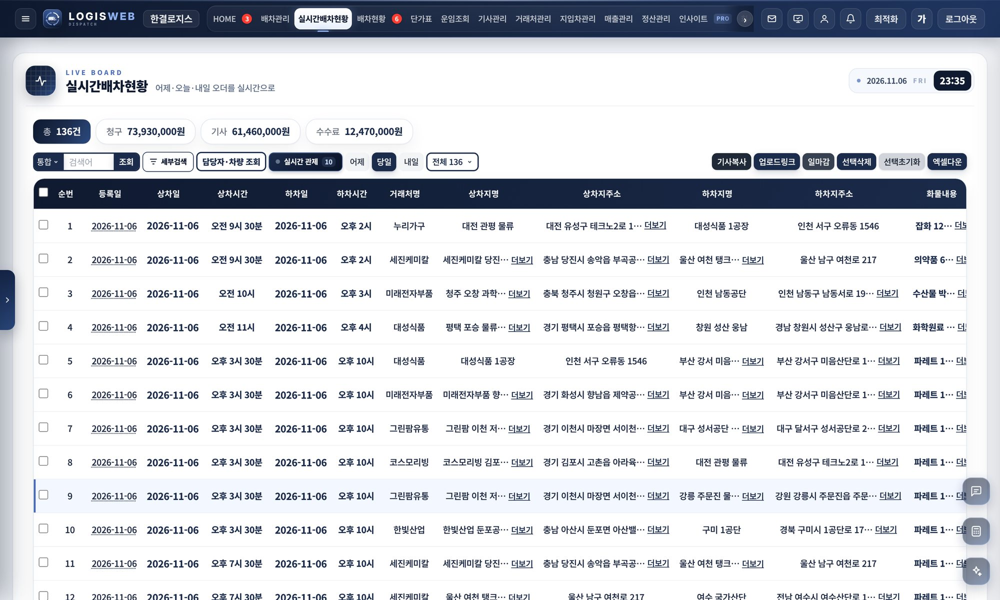
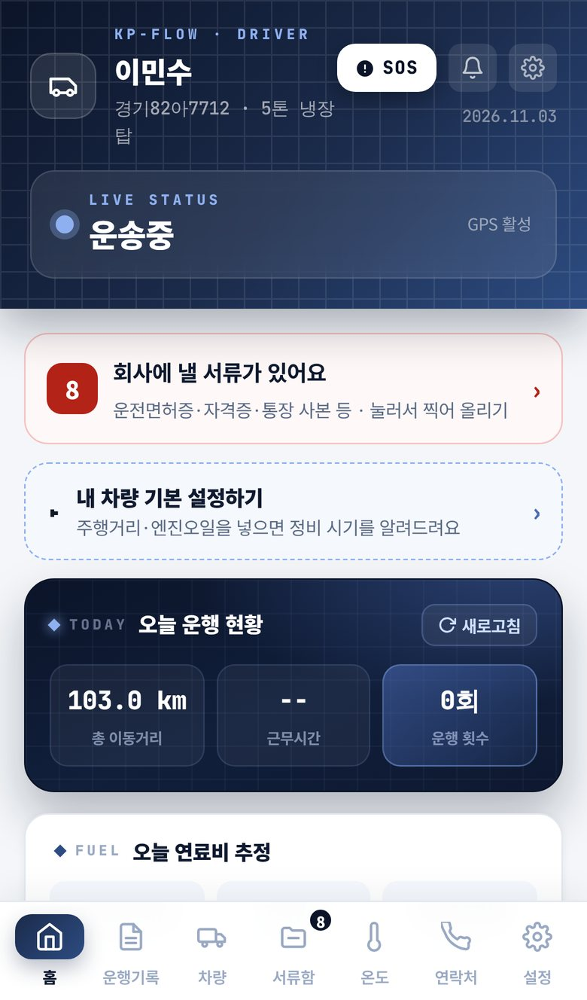
전화·카톡·엑셀·장부를 오가던 일을 순서대로 이어 붙였습니다. 앞 단계에서 입력한 내용이 다음 단계로 자동으로 넘어갑니다.
카톡·문자·캡처를 붙여넣으면 상하차지·일시·차종 자동 입력
자사운임표로 운임 확인 · 기사 지정 · 24시콜 전송
기사앱 GPS로 상차·운송·하차 단계를 지도에서 확인
기사가 링크·앱으로 사진을 올리면 오더에 자동 첨부
거래명세서·지급명세서가 배차 기록으로 자동 계산
운임 변경·지출 결의는 전자결재로 · 월 마감 점검
기사님이 기사앱을 켜두면 위치가 자동으로 전송됩니다. 상차지 진입부터 하차지 도착까지 단계가 저절로 바뀌고, 사무실 화면에 바로 반영됩니다.
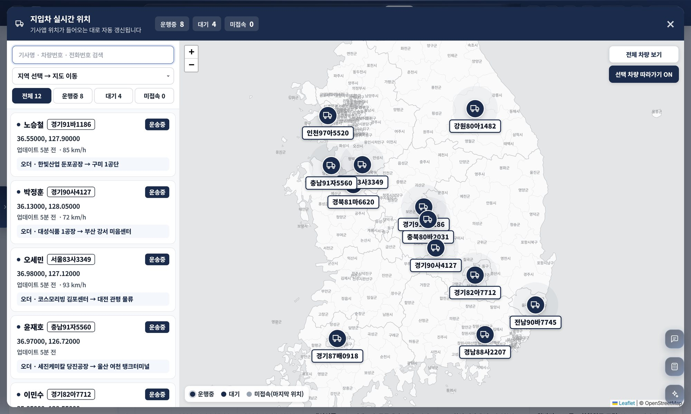
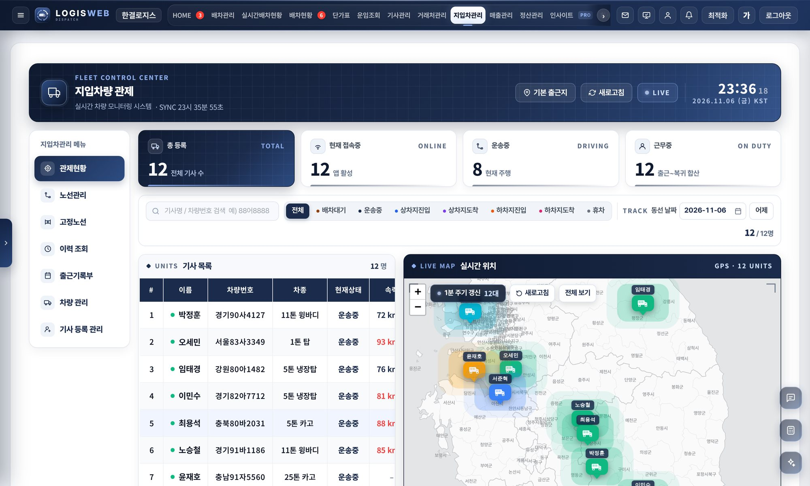
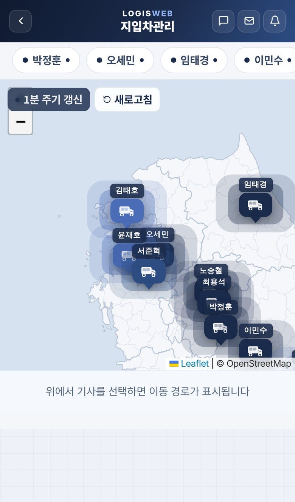
기사앱이 화면을 꺼도 위치를 계속 보냅니다. 마지막 위치와 갱신 시각이 함께 보입니다.
상하차지 반경에 들어가면 진입·도착으로 바뀌어, 지금 어느 단계인지 한눈에 압니다.
도착 예정 시간을 넘기거나 급한 미배차 오더가 생기면 담당자에게 알림이 갑니다.
노선관리, 고정노선, 이동 경로 이력, 출근기록부, 차량 정비·검사 만기까지 함께 관리합니다.
현직 배차팀장이 매일 쓰면서 고친 화면입니다. 손이 가는 일은 줄이고, 놓치기 쉬운 건 먼저 알려줍니다.
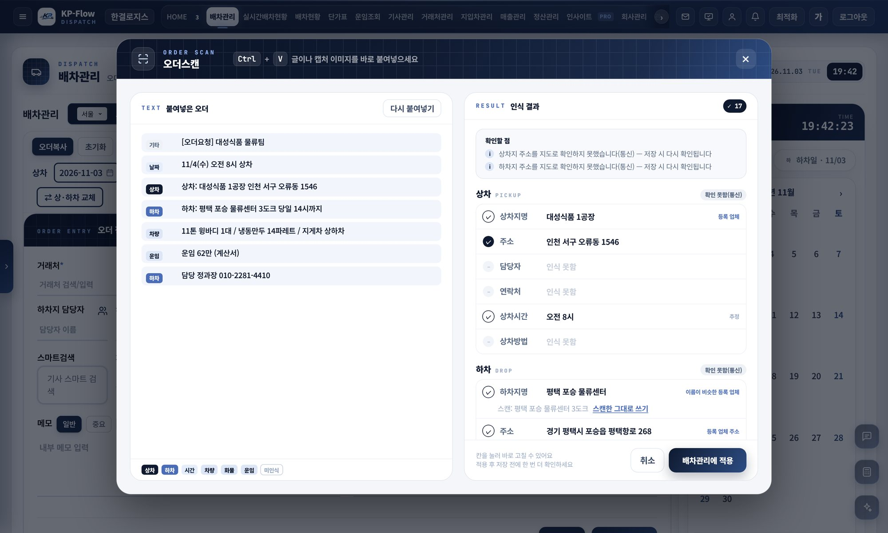
화주가 보낸 문자·카톡·캡처 이미지를 그대로 붙여넣으세요. 문장을 읽어 칸마다 나눠 넣어 줍니다.
누가 어떤 오더를 바꿨는지 모든 화면에 즉시 반영됩니다. 같은 오더를 두 번 배차할 일이 없습니다.
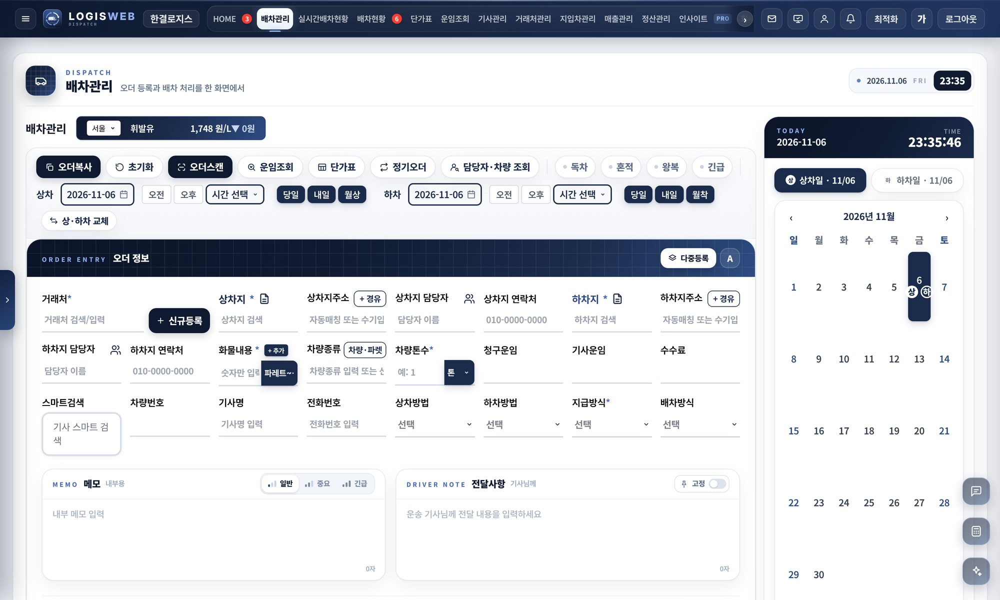
거래처를 고르면 상하차지·담당자·연락처가 따라오고, 기사를 고르면 차량번호·전화번호가 채워집니다.
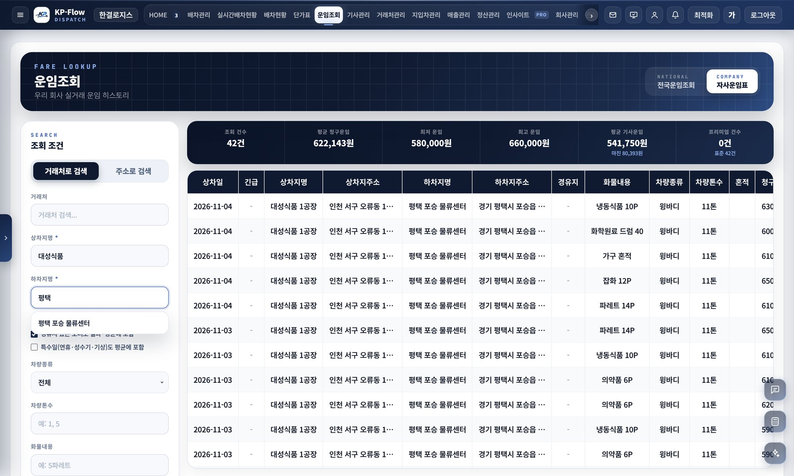
우리 회사가 실제로 받은 운임 이력으로 최저·평균·최고 운임을 보여 줍니다. 견적 낼 때 감이 아니라 기록으로 답합니다.
월말마다 엑셀을 다시 맞출 필요가 없습니다. 배차할 때 입력한 운임이 거래처 청구, 기사 지급, 회계 장부까지 이어집니다.
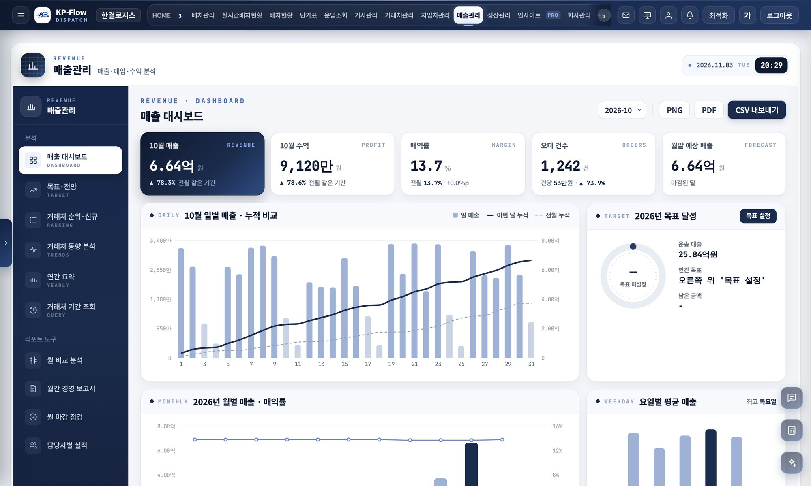
따로 집계하지 않아도 오늘 매출과 이번 달 예상 매출까지 계산됩니다.
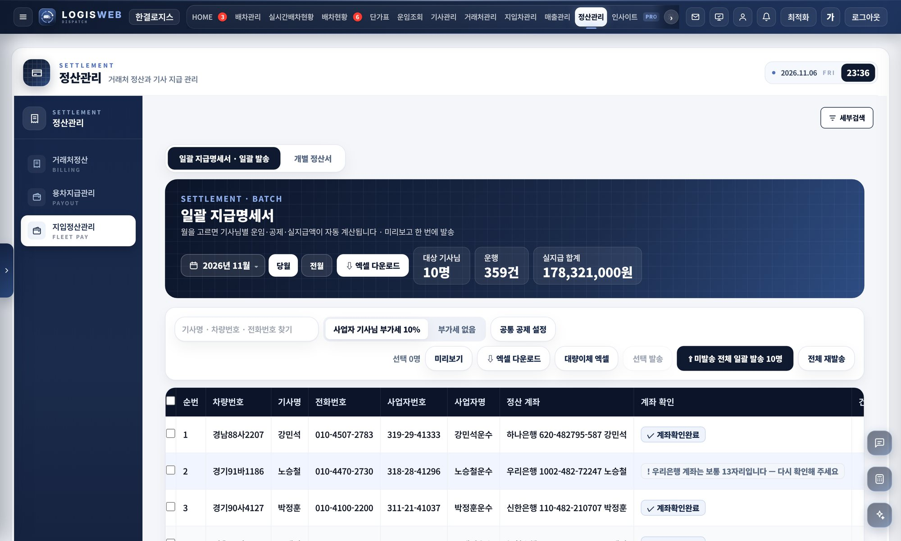
월을 고르면 기사님별 운행 건수·운임·공제·실지급액이 자동으로 계산됩니다.
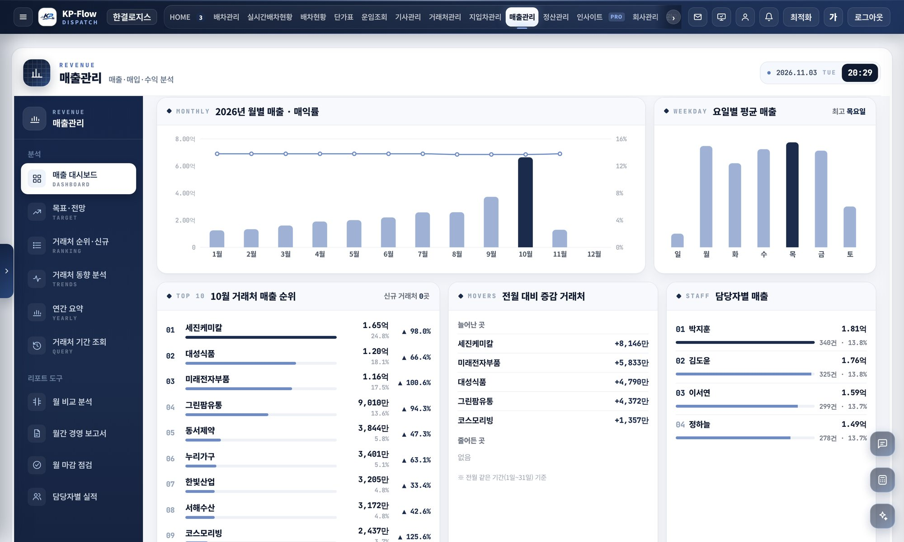
월별 추이와 요일별 패턴, 거래처 순위와 증감, 담당자별 매출이 한 화면에 정리됩니다.
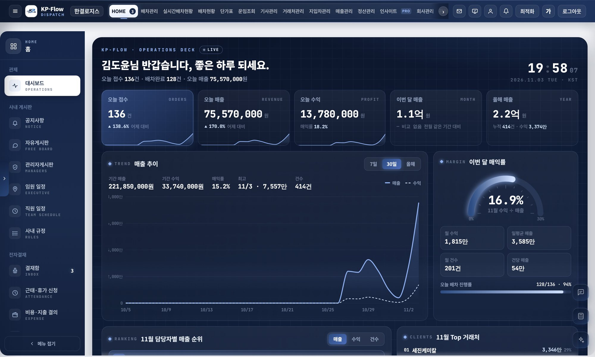
오늘 접수·배차 진행률·매출 추이·이번 달 매익률·담당자 순위를 첫 화면에 모았습니다.
거래명세서 PDF·엑셀 생성, 메일 발송, 미수금·입금 대조
기사 운임 지급 현황과 일괄 지급 처리
기사별 운임·공제·실지급액과 지급명세서 일괄 발송
매출·매입, 예상 부가세, 미수·미지급과 기간별 현황
통장·현금·예금·대출 잔액과 수입·지출 장부
빠진 운임·지급방식 불일치를 마감 전에 찾아냅니다
매출·매익률 원인 분석과 보고서 파일 내보내기
세금계산서 발행·조회를 프로그램 안에서 처리하도록 연동을 준비하고 있습니다
운송사에서 실제로 오가는 서류를 31종 양식으로 만들었습니다. 결재자가 열어보면 기안자에게 바로 보이고, 승인되면 연차·장부에 자동으로 반영됩니다.
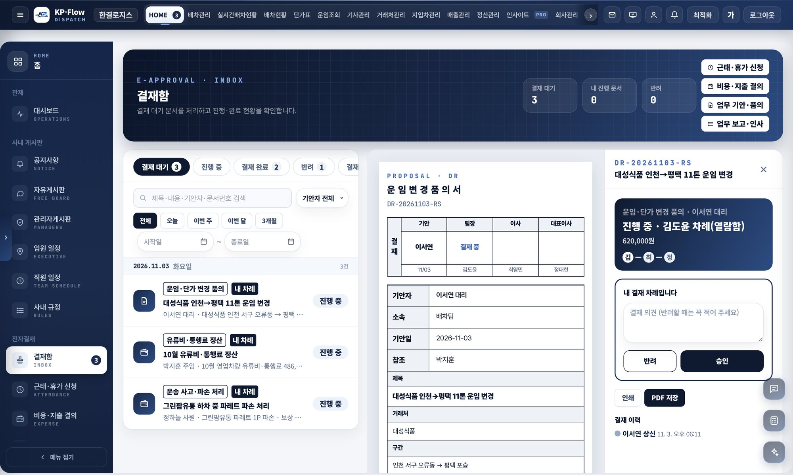
연차 · 반차 · 외근 · 출장 · 경조사 · 병가 · 연장근무
지출결의 · 법인카드 · 유류비·통행료 · 운송 사고·파손
운임·단가 변경 · 신규 거래처 · 차량 정비 · 제증명
일일 업무일지 · 회의록 · 시말서 · 인사발령 · 사직서
직원은 휴대폰으로 배차현황과 결재를, 기사님은 기사앱으로 오늘 배차와 서류를 처리합니다. 누르는 순간 사무실 화면에 반영됩니다.
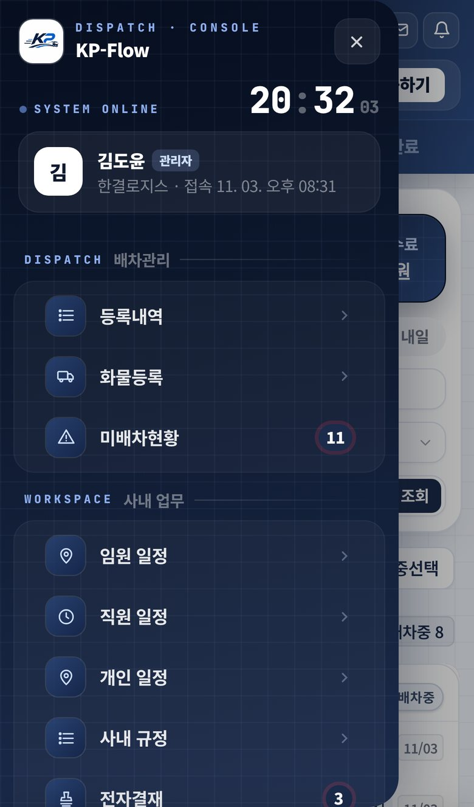
등록내역·화물등록·미배차현황부터 일정·결재까지 휴대폰에서 씁니다.
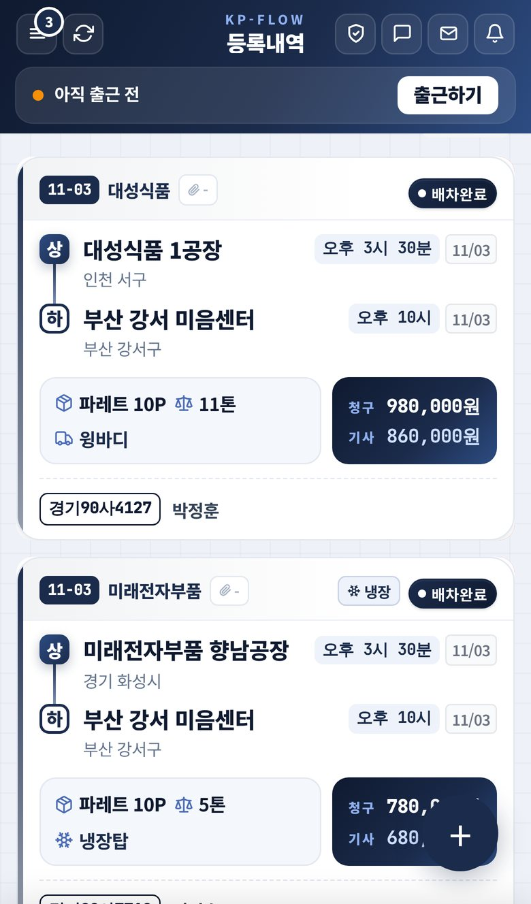
상·하차지, 청구·기사운임, 배정된 기사까지 카드 한 장으로 확인합니다.
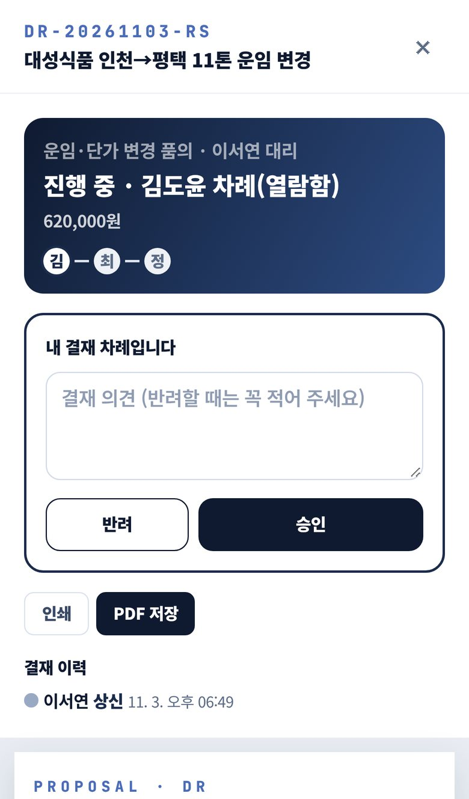
결재 알림을 누르면 문서가 열리고, 의견을 남겨 바로 승인·반려합니다.
GPS가 켜져 있으면 운송 상태와 이동거리가 사무실 관제 화면에 그대로 보입니다.
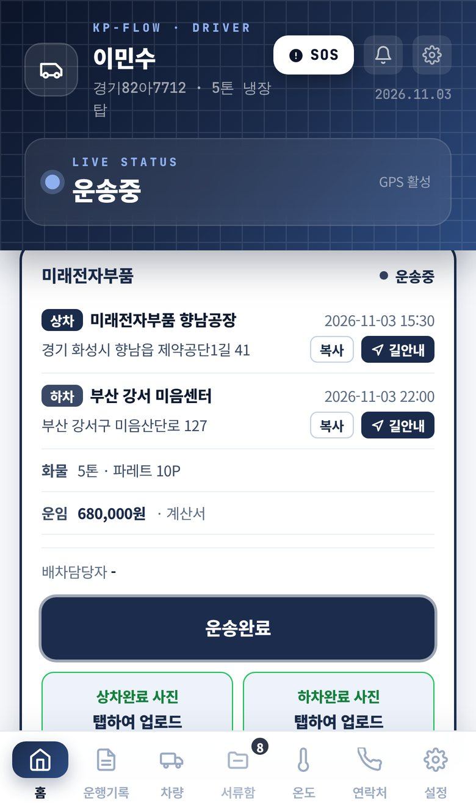
상·하차지 주소 복사와 길안내, 상차·하차 사진 업로드, 운송완료까지 한 화면에서.
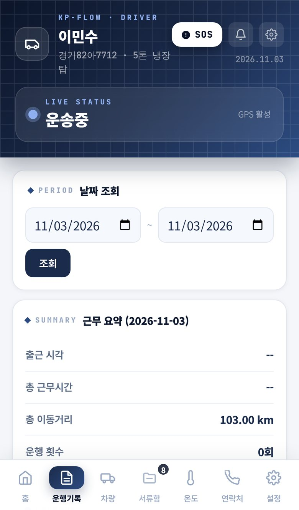
날짜별 근무·이동거리가 쌓이고, 지급명세서와 회사에 낼 서류도 앱에서 주고받습니다.
운송사에 필요한 사내 업무를 배차 프로그램 안에 넣었습니다. 프로그램을 여러 개 띄울 일이 없습니다.
운송사마다 데이터가 완전히 분리되어 저장되고, 직원별로 볼 수 있는 메뉴를 정할 수 있습니다.
PC 프로그램은 설치 파일 없이 바탕화면 앱으로 설치되고, 업데이트는 자동으로 적용됩니다.
Windows · Mac에서 크롬이나 엣지로 설치합니다. 바탕화면 아이콘으로 실행되고, 따로 업데이트할 필요가 없습니다.
기사님 휴대폰에 설치하면 위치 전송, 오늘 배차 확인, 인수증·서류 제출을 할 수 있습니다.
기사앱 APK 받기아이폰·안드로이드 모두 쓸 수 있습니다. 홈 화면에 추가하면 앱처럼 열리고 결재 알림도 받습니다.
아래 양식에 회사 정보를 남겨 주세요.
담당자가 연락드려 거래처·기사·운임 엑셀 자료를 옮겨 드립니다.
부서와 직책에 맞게 메뉴·권한·결재선을 맞춰 드립니다.
실제 업무에 써 보시고 요금제를 고르시면 됩니다.
네. 거래처, 상하차지, 기사 목록을 엑셀이나 구글시트에서 가져올 수 있고, 도입 상담 때 이관을 도와드립니다.
아니요. 인수증·서류 제출은 문자로 보낸 링크로 로그인 없이 할 수 있습니다. 실시간 위치 관제를 쓰려면 기사앱을 설치하면 됩니다.
크롬이나 엣지로 프로그램에 접속해 주소창의 설치 버튼을 누르면 바탕화면 앱으로 설치됩니다. 업데이트는 자동으로 반영됩니다.
볼 수 없습니다. 운송사마다 데이터가 분리되어 저장되고, 회사 안에서도 직원별로 메뉴 권한을 정할 수 있습니다.
현재는 거래명세서 발행과 메일 발송, 예상 부가세 집계까지 지원합니다. 홈택스 연동은 준비 중이며, 연동되면 프로그램 안에서 세금계산서를 처리할 수 있습니다.
신청하시면 담당자가 연락드려 체험 계정을 열어 드립니다.
설치 파일을 받을 필요 없이, 브라우저에서 바로 바탕화면 앱으로 설치됩니다.
앱스토어 설치 없이 홈 화면 아이콘으로 바로 열립니다.